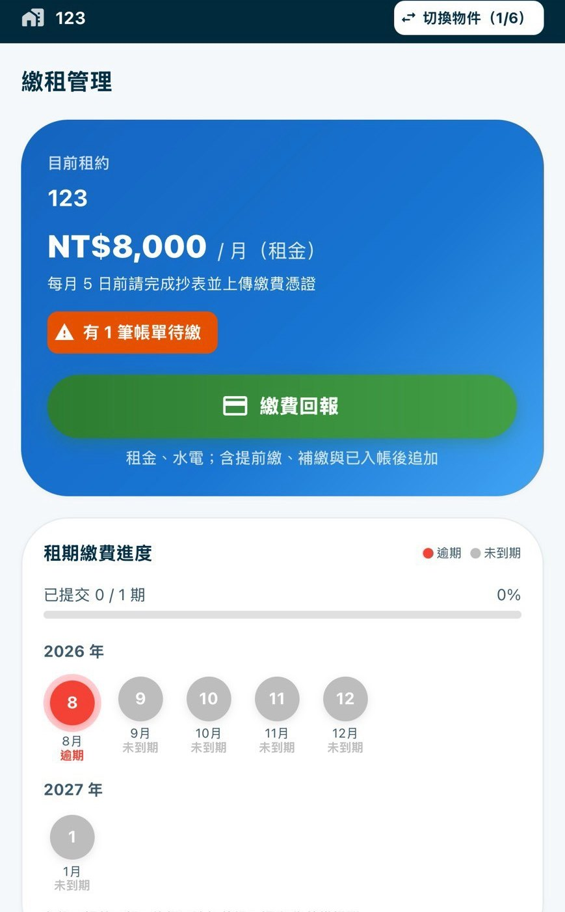
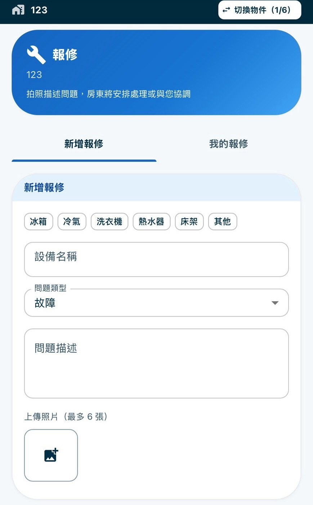

幫我找師傅
進 TaskGo
指定廠商，或公開詢價。案號、報價、施工照片回到這一張單。
租屋與居住
與達觀共同推動。房東、包租代管、房客，用 LINE 把招租、收租、報修、退租收回同一個地方。不必下載 App。
下一頁是 LINE 裡的實際畫面，以及報修的四種決定。



指定廠商，或公開詢價。案號、報價、施工照片回到這一張單。
有認識的師傅也寫在這張報修上，進度一樣留著。
授權房客處理。完工請款或折抵，雙方看得到。
先觀察或結案。不是沒回。